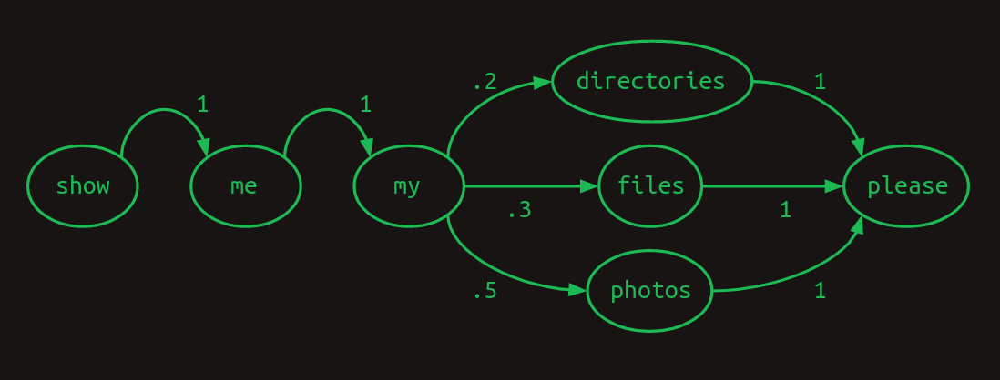
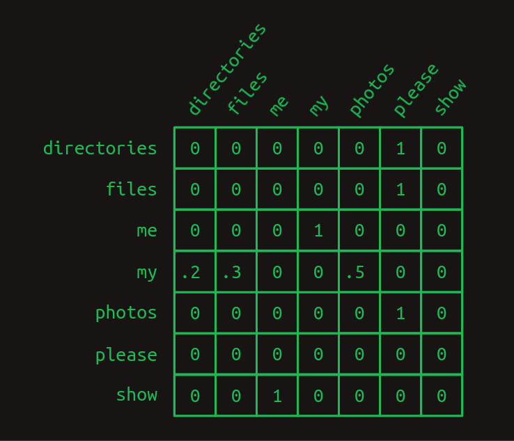
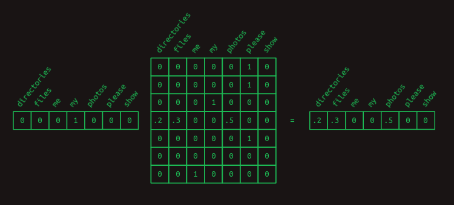
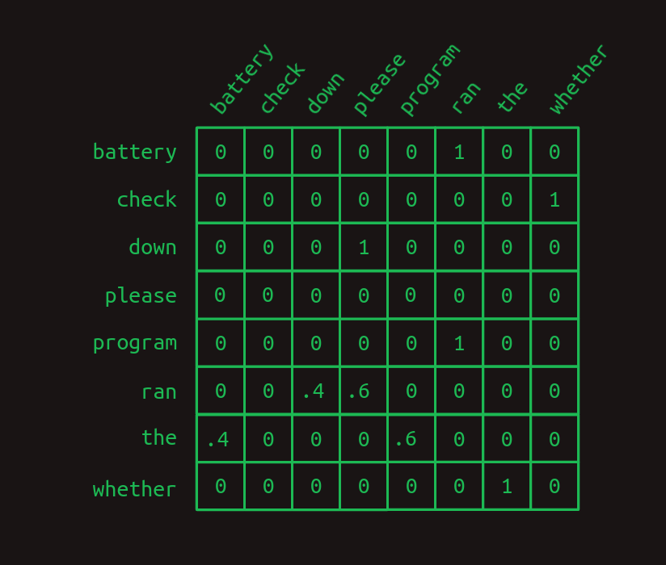
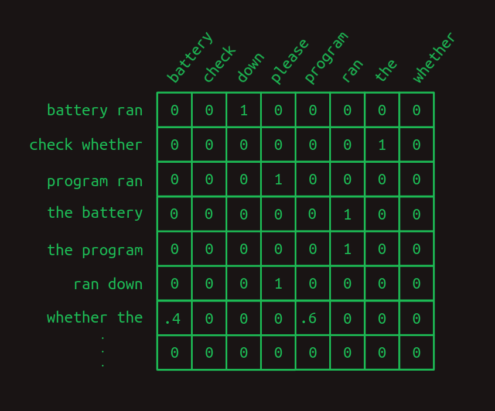
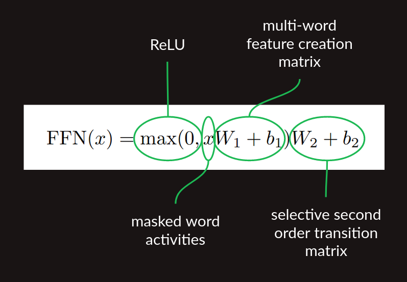
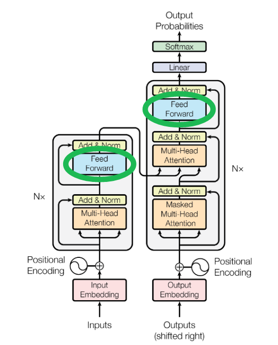
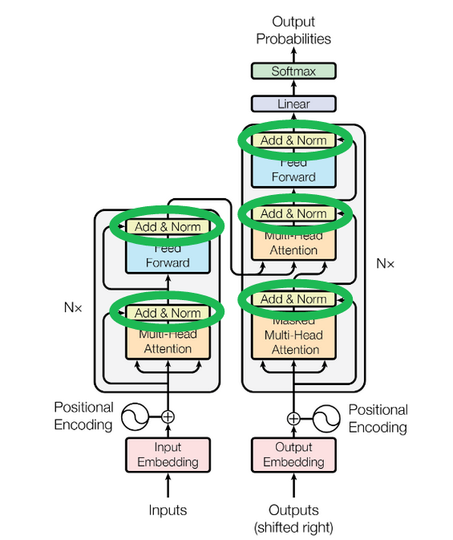

I procrastinated a deep dive into transformers for a few years. Finally the discomfort of not knowing what makes them tick grew too great for me. Here is that dive.
Transformers were introduced in this 2017 paper as a tool for sequence transduction—converting one sequence of symbols to another. The most popular examples of this are translation, as in English to German. It has also been modified to perform sequence completion—given a starting prompt, carry on in the same vein and style. They have quickly become an indispensible tool for research and product development in natural language processing.
Before we start, just a heads-up. We're going to be talking a lot about matrix multiplications and touching on backpropagation (the algorithm for training the model), but you don't need to know any of it beforehand. We'll add the concepts we need one at a time, with explanation.
This isn't a short journey, but I hope you'll be glad you came.
- ► One-hot encoding
- ► Dot product
- ► Matrix multiplication
- ► Matrix multiplication as a table lookup
- ► First order sequence model
- ► Second order sequence model
- ► Second order sequence model with skips
- ► Masking
- ► Rest Stop and an Off Ramp
- ► Attention as matrix multiplication
- ► Second order sequence model as matrix multiplications
- ► Sequence completion
- ► Embeddings
- ► Positional encoding
- ► De-embeddings
- ► Softmax
- ► Multi-head attention
- ► Single head attention revisited
- ► Skip connection
- ► Multiple layers
- ► Decoder stack
- ► Encoder stack
- ► Cross-attention
- ► Tokenizing
- ► Byte pair encoding
- ► Audio input
- ► Resources and credits
One-hot encoding
In the beginning were the words. So very many words. Our first step is to convert all the words to numbers so we can do math on them.
Imagine that our goal is to create the computer that responds to our voice commands. It’s our job to build the transformer that converts (or transduces) a sequence of sounds to a sequence of words.
We start by choosing our vocabulary, the collection of symbols that we are going to be working with in each sequence. In our case, there will be two different sets of symbols, one for the input sequence to represent vocal sounds and one for the output sequence to represent words.
For now, let's assume we're working with English. There are tens of thousands of words in the English language, and perhaps another few thousand to cover computer-specific terminology. That would give us a vocabulary size that is the better part of a hundred thousand. One way to convert words to numbers is to start counting at one and assign each word its own number. Then a sequence of words can be represented as a list of numbers.
For example, consider a tiny language with a vocabulary size of three: files, find, and my. Each word could be swapped out for a number, perhaps files = 1, find = 2, and my = 3. Then the sentence "Find my files", consisting of the word sequence [ find, my, files ] could be represented instead as the sequence of numbers [2, 3, 1].
This is a perfectly valid way to convert symbols to numbers, but it turns out that there's another format that's even easier for computers to work with, one-hot encoding. In one-hot encoding a symbol is represented by an array of mostly zeros, the same length of the vocabulary, with only a single element having a value of one. Each element in the array corresponds to a separate symbol.
Another way to think about one-hot encoding is that each word still gets assigned its own number, but now that number is an index to an array. Here is our example above, in one-hot notation.
So the sentence "Find my files" becomes a sequence of one-dimensional arrays, which, after you squeeze them together, starts to look like a two-dimensional array.
Heads-up, I'll be using the terms "one-dimensional array" and "vector" interchangeably. Likewise with "two-dimensional array" and "matrix".
Dot product
One really useful thing about the one-hot representation is that it lets us compute dot products. These are also known by other intimidating names like inner product and scalar product. To get the dot product of two vectors, multiply their corresponding elements, then add the results.

Dot products are especially useful when we're working with our one-hot word representations. The dot product of any one-hot vector with itself is one.

And the dot product of any one-hot vector with any other one-hot vector is zero.

The previous two examples show how dot products can be used to measure similarity. As another example, consider a vector of values that represents a combination of words with varying weights. A one-hot encoded word can be compared against it with the dot product to show how strongly that word is represented.

Matrix multiplication
The dot product is the building block of matrix multiplication, a very particular way to combine a pair of two-dimensional arrays. We'll call the first of these matrices A and the second one B. In the simplest case, when A has only one row and B has only one column, the result of matrix multiplication is the dot product of the two.
Notice how the number of columns in A and the number of rows in B needs to be the same for the two arrays to match up and for the dot product to work out.
When A and B start to grow, matrix multiplication starts to get trippy. To handle more than one row in A, take the dot product of B with each row separately. The answer will have as many rows as A does.
When B takes on more columns, take the dot product of each column with A and stack the results in successive columns.

Now we can extend this to mutliplying any two matrices, as long as the number of columns in A is the same as the number of rows in B. The result will have the same number of rows as A and the same number of columns as B.
If this is the first time you're seeing this, it might feel needlessly complex, but I promise it pays off later.
Matrix multiplication as a table lookup
Notice how matrix multiplication acts as a lookup table here. Our A matrix is made up of a stack of one-hot vectors. They have ones in the first column, the fourth column, and the third column, respectively. When we work through the matrix multiplication, this serves to pull out the first row, the fourth row, and the third row of the B matrix, in that order. This trick of using a one-hot vector to pull out a particular row of a matrix is at the core of how transformers work.
First order sequence model
We can set aside matrices for a minute and get back to what we really care about, sequences of words. Imagine that as we start to develop our natural language computer interface we want to handle just three possible commands:
- Show me my directories please.
- Show me my files please.
- Show me my photos please.
{directories, files, me, my, photos, please, show}.
One useful way to represent sequences is with a transition model. For every word in the vocabulary, it shows what the next word is likely to be. If users ask about photos half the time, files 30% of the time, and directories the rest of the time, the transition model will look like this. The sum of the transitions away from any word will always add up to one.

This particular transition model is called a Markov chain, because it satisfies the Markov property that the probabilities for the next word depend only on recent words. More specifically, it is a first order Markov model because it only looks at the single most recent word. If it considered the two most recent words it would be a second order Markov model.
Our break from matrices is over. It turns out that Markov chains can be expressed conveniently in matrix form. Using the same indexing scheme that we used when creating one-hot vectors, each row represents one of the words in our vocabulary. So does each column. The matrix transition model treats a matrix as a lookup table. Find the row that corresponds to the word you’re interested in. The value in each column shows the probability of that word coming next. Because the value of each element in the matrix represents a probability, they will all fall between zero and one. Because probabilities always sum to one, the values in each row will always add up to one.

In the transition matrix here we can see the structure of our three sentences clearly. Almost all of the transition probabilities are zero or one. There is only one place in the Markov chain where branching happens. After my, the words directories, files, or photos might appear, each with a different probability. Other than that, there’s no uncertainty about which word will come next. That certainty is reflected by having mostly ones and zeros in the transition matrix.
We can revisit our trick of using matrix multiplication with a one-hot vector to pull out the transition probabilities associated with any given word. For instance, if we just wanted to isolate the probabilities of which word comes after my, we can create a one-hot vector representing the word my and multiply it by our transition matrix. This pulls out the relevant row and shows us the probability distribution of what the next word will be.

Second order sequence model
Predicting the next word based on only the current word is hard. That's like predicting the rest of a tune after being given just the first note. Our chances are a lot better if we can at least get two notes to go on.
We can see how this works in another toy language model for our computer commands. We expect that this one will only ever see two sentences, in a 40/60 proportion.
- Check whether the battery ran down please.
- Check whether the program ran please.

Here we can see that if our model looked at the two most recent words, instead of just one, that it could do a better job. When it encounters battery ran, it knows that the next word will be down, and when it sees program ran the next word will be please. This eliminates one of the branches in the model, reducing uncertainty and increasing confidence. Looking back two words turns this into a second order Markov model. It gives more context on which to base next word predictions. Second order Markov chains are more challenging to draw, but here are the connections that demonstrate their value.
To highlight the difference between the two, here is the first order transition matrix,

and here is the second order transition matrix.

Notice how the second order matrix has a separate row for every combination of words (most of which are not shown here). That means that if we start with a vocabulary size of N then the transition matrix has N^2 rows.
What this buys us is more confidence. There are more ones and fewer fractions in the second order model. There's only one row with fractions in it, one branch in our model. Intuitively, looking at two words instead of just one gives more context, more information on which to base a next word guess.
Second order sequence model with skips
A second order model works well when we only have to look back two words to decide what word comes next. What about when we have to look back further? Imagine we are building yet another language model. This one only has to represent two sentences, each equally likely to occur.
- Check the program log and find out whether it ran please.
- Check the battery log and find out whether it ran down please.
In this example, in order to determine which word should come after ran, we would have to look back 8 words into the past. If we want to improve on our second order language model, we can of course consider third- and higher order models. However, with a significant vocabulary size this takes a combination of creativity and brute force to execute. A naive implementation of an eighth order model would have N^8 rows, a ridiculous number for any reasonable vocubulary.
Instead, we can do something sly and make a second order model, but consider the combinations of the most recent word with each of the words that came before. It's still second order, because we're only considering two words at a time, but it allows us to reach back further and capture long range dependencies. The difference between this second-order-with-skips and a full umpteenth-order model is that we discard most of the word order information and combinations of preceeeding words. What remains is still pretty powerful.
Markov chains fail us entirely now, but we can still represent the link between each pair of preceding words and the words that follow. Here we've dispensed with numerical weights, and instead are showing only the arrows associated with non-zero weights. Larger weights are shown with heavier lines.

Here's what it might look like in a transition matrix.
This view only shows the rows relevant to predicting the word that comes after ran. It shows instances where the most recent word (ran) is preceded by each of the other words in the vocabulary. Only the relevant values are shown. All the empty cells are zeros.
The first thing that becomes apparent is that, when trying to predict the word that comes after ran, we no longer look at just one line, but rather a whole set of them. We've moved out of the Markov realm now. Each row no longer represents the state of the sequence at a particular point. Instead, each row represents one of many features that may describe the sequence at a particular point. The combination of the most recent word with each of the words that came before makes for a collection of applicable rows, maybe a large collection. Because of this change in meaning, each value in the matrix no longer represents a probability, but rather a vote. Votes will be summed and compared to determine next word predictions.
The next thing that becomes apparent is that most of the features don't matter. Most of the words appear in both sentences, and so the fact that they have been seen is of no help in predicting what comes next. They all have a value of .5. The only two exceptions are battery and program. They have some 1 and 0 weights associated with the two cases we're trying to distinguish. The feature battery, ran indicates that ran was the most recent word and that battery occurred somewhere earlier in the sentence. This feature has a weight of 1 associated with down and a weight of 0 associated with please. Similarly, the feature program, ran has the opposite set of weights. This structure shows that it is the presence of these two words earlier in the sentence that is decisive in predicting which word comes next.
To convert this set of word-pair features into a next word estimate, the values of all the relevant rows need to be summed. Adding down the column, the sequence Check the program log and find out whether it ran generates sums of 0 for all the words, except a 4 for down and a 5 for please. The sequence Check the battery log and find out whether it ran does the same, except with a 5 for down and a 4 for please. By choosing the word with the highest vote total as the next word prediction, this model gets us the right answer, despite having an eight word deep dependency.
Masking
On more careful consideration, this is unsatisfying. The difference between a vote total of 4 and 5 is relatively small. It suggests that the model isn't as confident as it could be. And in a larger, more organic language model it's easy to imagine that such a slight difference could be lost in the statistical noise.
We can sharpen the prediction by weeding out all the uninformative feature votes. With the exception of battery, ran and program, ran. It's helpful to remember at this point that we pull the relevant rows out of the transition matrix by multiplying it with a vector showing which features are currently active. For this example so far, we've been using the implied feature vector shown here.

It includes a one for each feature that is a combination of ran with each of the words that come before it. Any words that come after it don't get included in the feature set. (In the next word prediction problem these haven't been seen yet, and so it's not fair to use them predict what comes next.) And this doesn't include all the other possible word combinations. We can safely ignore these for this example because they will all be zero.
To improve our results, we can additionally force the unhelpful features to zero by creating a mask. It's a vector full of ones except for the positions you'd like to hide or mask, and those are set to zero. In our case we'd like to mask everything except for battery, ran and program, ran, the only two features that have been of any help.

To apply the mask, we multiply the two vectors element by element. Any feature activity value in an unmasked position will be multiplied by one and left unchanged. Any feature activity value in a masked position will be multiplied by zero, and thus forced to zero.
The mask has the effect of hiding a lot of the transition matrix. It hides the combination of ran with everything except battery and program, leaving just the features that matter.

After masking the unhelpful features, the next word predictions become much stronger. When the word battery occurs earlier in the sentence, the word after ran is predicted to be down with a weight of 1 and please with a weight of 0. What was a weight difference of 25 percent has become a difference of infinity percent. There is no doubt what word comes next. The same strong prediction occurs for please when program occurs early on.
This process of selective masking is the attention called out in the title of the original paper on transformers. So far, what we've descibed is a just an approximation of how attention is implemented in the paper. It captures the important concepts, but the details are different. We'll close that gap later.
Rest Stop and an Off Ramp
Congratulations on making it this far. You can stop if you want. The selective-second-order-with-skips model is a useful way to think about what transformers do, at least in the decoder side. It captures, to a first approximation, what generative language models like OpenAI's GPT-3 are doing. It doesn't tell the complete story, but it represents the central thrust of it.
The next sections cover more of the gap between this intuitive explanation and how transformers are implemented. These are largely driven by three practical considerations.
- Computers are especially good at matrix multiplications. There is an entire industry around building computer hardware specifically for fast matrix multiplications. Any computation that can be expressed as a matrix multiplication can be made shockingly efficient. It's a bullet train. If you can get your baggage into it, it will get you where you want to go real fast.
- Each step needs to be differentiable. So far we've just been working with toy examples, and have had the luxury of hand-picking all the transition probabilities and mask values—the model parameters. In practice, these have to be learned via backpropagation, which depends on each computation step being differentiable. This means that for any small change in a parameter, we can calculate the corresponding change in the model error or loss.
-
The gradient needs to be smooth and well
conditioned.
The combination of all the
derivatives for all the parameters is the loss
gradient.
In practice, getting backpropagation to behave well requires
gradients that are smooth, that is, the slope doesn’t change
very quickly as you make small steps in any direction.
They also behave much better when the gradient is well conditioned,
that is, it’s not radically larger in one direction than another.
If you picture a loss function as a landscape, The Grand Canyon
would be a poorly conditioned one. Depending on whether you are
traveling along the bottom, or up the side, you will have very
different slopes to travel. By contrast, the rolling hills of
the classic Windows screensaver would have a well conditioned
gradient.
If the science of architecting neural networks is creating differentiable building blocks, the art of them is stacking the pieces in such a way that the gradient doesn’t change too quickly and is roughly of the same magnitude in every direction.
Attention as matrix multiplication
Feature weights could be straightforward to build by counting how often each word pair/next word transition occurs in training, but attention masks are not. Up to this point, we've pulled the mask vector out of thin air. How transformers find the relevant mask matters. It would be natural to use some sort of lookup table, but now we are focusing hard on expressing everything as matrix multiplications. We can use the same lookup method we introduced above by stacking the mask vectors for every word into a matrix and using the one-hot representation of the most recent word to pull out the relevant mask.

In the matrix showing the collection of mask vectors, we've only shown the one we're trying to pull out, for clarity.
We're finally getting to the point where we can start tying into the paper. This mask lookup is represented by the QK^T term in the attention equation.

The query Q represents the feature of interest and the matrix K represents the collection of masks. Because it's stored with masks in columns, rather than rows, it needs to be transposed (with the T operator) before multiplying. By the time we're all done, we'll make some important modifications to this, but at this level it captures the concept of a differentiable lookup table that transformers make use of.
Second order sequence model as matrix multiplications
Another step that we have been hand wavy about so far is the construction of transition matrices. We have been clear about the logic, but not about how to do it with matrix multiplications.
Once we have the result of our attention step, a vector that includes the most recent word and a small collection of the words that have preceded it, we need to translate that into features, each of which is a word pair. Attention masking gets us the raw material that we need, but it doesn’t build those word pair features. To do that, we can use a single layer fully connected neural network.
To see how a neural network layer can create these pairs, we'll hand craft one. It will be artificially clean and stylized, and its weights will bear no resemblance to the weights in practice, but it will demonstrate how the neural network has the expressivity necessary to build these two word pair features. To keep it small and clean, will focus on just the three attended words from this example, battery, program, ran.

In the layer diagram above, we can see how the weights act to combine the presence and absence of each word into a collection of features. This can also be expressed in matrix form.

And it can be calculated by a matrix multiplication with a vector representing the collection of words seen so far.

The battery and ran elements are 1 and the program element is 0. The bias element is always 1, a feature of neural networks. Working through the matrix multiplication gives a 1 for the element representing battery, ran and a -1 for the element representing program, ran. The results for the other case are similar.

The final step in calculating these word combo features is to apply a rectified linear unit (ReLU) nonlinearity. The effect of this is to substitute any negative value with a zero. This cleans up both of these results so they represent the presence (with a 1) or absence (with a 0) of each word combination feature.
With those gymnastics behind us, we finally have a matrix multiplication based method for creating multiword features. Although I originally claimed that these consist of the most recent word and one earlier word, a closer look at this method shows that it can build other features too. When the feature creation matrix is learned, rather than hard coded, other structures can be learned. Even in this toy example, there's nothing to stop the creation of a three-word combination like battery, program, ran. If this combination occurred commonly enough it would probably end up being represented. There wouldn't be any way to indicated what order the words occurred in (at least not yet), but we could absolutely use their co-occurrence to make predictions. It would even be possible to make use of word combos that ignored the most recent word, like battery, program. These and other types of features are probably created in practice, exposing the oversimiplification I made when I claimed that transformers are a selective-second-order-with-skips sequence model. There's more nuance to it than that, and now you can see exactly what that nuance is. This won't be the last time we'll change the story to incorporate more subtlety.
In this form, the multiword feature matrix is ready for one more matrix multiplication, the second order sequence model with skips we developed above. All together, the sequence of
- feature creation matrix multiplication,
- ReLU nonlinearity, and
- transition matrix multiplication

The Figure 1 architecture diagram of the of the paper shows these lumped together as the Feed Forward block.

Sequence completion
So far we've only talked about next word prediction. There are a couple of pieces we need to add to get our decoder to generate a long sequence. The first is a prompt, some example text to give the transformer running start and context on which to build the rest of the sequence. It gets fed in to decoder, the column on the right in the image above, where it's labeled "Outputs (shifted right)". Choosing a prompt that gives interesting sequences is an art in itself, called prompt engineering. It's also a great example of humans modifying their behavior to support algorithms, rather than the other way around.
Once the decoder has a partial sequence to get started with, it takes a forward pass. The end result is a set of predicted probability distributions of words, one probability distribution for each position in the sequence. At each position, the distribution shows the predicted probabilities for each next word in the vocabulary. We don't care about predicted probabilities for each established word in the sequence. They're already established. What we really care about are the predicted probabilities for the next word after the end of the prompt. There are several ways to go about choosing what that word should be, but the most straightforward is called greedy, picking the word with the highest probability.
The new next word then gets added to the sequence, substituted in at the with the "Outputs" at the bottom of the decoder, and the process is repeated until you get tired of it.
The one piece we're not quite ready to describe in detail is yet another form of masking, ensuring that when the transformer makes predictions it only looks behind, not ahead. It's applied in the block labeled "Masked Multi-Head Attention". We'll revisit this later when we can be clearer about how it's done.
Embeddings
As we’ve described them so far, transformers are too big. For a vocabulary size N of say 50,000, the transition matrix between all pairs of words and all potential next words would have 50,000 columns and 50,000 squared (2.5 billion) rows, totaling over 100 trillion elements. That is still a stretch, even for modern hardware.
It’s not just the size of the matrices that’s the problem. In order to build a stable transition language model, we would have to provide training data illustrating every potential sequence several times at least. That would far exceed the capacity of even the most ambitious training data sets.
Fortunately, there is a workaround for both of these problems, embeddings.
In a one-hot representation of a language, there is one vector element for each word. For a vocabulary of size N that vector is an N-dimensional space. Each word represents a point in that space, one unit away from the origin along one of the many axes. I haven't figured out a great way to draw a high dimensional space, but there's a crude representation of it below.

In an embedding, those word points are all taken and rearranged (projected, in linear algebra terminology) into a lower-dimensional space. The picture above shows what they might look like in a 2-dimensional space for example. Now, instead of needing N numbers to specify a word, we only need 2. These are the (x, y) coordinates of each point in the new space. Here's what a 2-dimensional embedding might look like for our toy example, together with the coordinates of a few of the words.

A good embedding groups words with similar meanings together. A model that works with an embedding learns patterns in the embedded space. That means that whatever it learns to do with one word automatically gets applied to all the words right next to it. This has the added benefit of reducing the amount of training data needed. Each example gives a little bit of learning that gets applied across a whole neighborhood of words.
In this illustration I tried to show that by putting important components in one area (battery, log, program), prepositions in another (down, out), and verbs near the center (check, find, ran). In an actual embedding the groupings may not be so clear or intuitive, but the underlying concept is the same. Distance is small between words that behave similarly.
An embedding reduces the number of parameters needed by a tremendous amount. However, the fewer the dimensions in the embedded space, the more information about the original words gets discarded. The richness of a language still requires quite a bit of space to lay out all the important concepts so that they don't step on each other's toes. By choosing the size of the embedded space, we get to trade off computational load for model accuracy.
It will probably not surprise you to learn that projecting words from their one-hot representation to an embedded space involves a matrix multiplication. Projection is what matrices do best. Starting with a one-hot matrix that has one row and N columns, and moving to an embedded space of two dimensions, the projection matrix will have N rows and two columns, as shown here.
This example shows how a one-hot vector, representing for example battery, pulls out the row associated with it, which contains the coordinates of the word in the embedded space. In order to make the relationship clearer, the zeros in the one-hot vector are hidden, as are all the other rows that don't get pulled out of the projection matrix. The full projection matrix is dense, each row containing the coordinates of the word it's associated with.
Projection matrices can convert the original collection of one-hot vocabulary vectors into any configuration in a space of whatever dimensionality you want. The biggest trick is finding a useful projection, one that has similar words grouped together, and one that has enough dimensions to spread them out. There are some decent pre-computed embeddings for common langauges, like English. Also, like everything else in the transformer, it can be learned during training.
In the Figure 1 architecture diagram of the original paper, here's where the embedding happens.

Positional encoding
Up to this point, we've assumed that the positions of words are ignored, at least for any words coming before the very most recent word. Now we get to fix that using positional embeddings.
There are several ways that position information could be introduced into our embedded represetation of words, but the way it was done in the original transformer was to add a circular wiggle.

The position of the word in the embedding space acts as the center of a circle. A perturbation is added to it, depending on where it falls in the order of the sequence of words. For each position, the word is moved the same distance but at a different angle, resulting in a circular pattern as you move through the sequence. Words that are close to each other in the sequence have similar perturbations, but words that are far apart are perturbed in different directions.
Since a circle is a two dimensional figure, representing a circular wiggle requires modifying two dimensions of the embedding space. If the embedding space consists of more than two dimensions (which it almost always does), the circular wiggle is repeated in all the other pairs of dimensions, but with different angular frequency, that is, it sweeps out a different number of rotations in each case. In some dimension pairs, the wiggle will sweep out many rotations of the circle. In other pairs, it will only sweep out a small fraction of a rotation. The combination of all these circular wiggles of different frequencies gives a good representation of the absolute position of a word within the sequence.
I'm still developing my intuition for why this works. It seems to add position information into the mix in a way that doesn't disrupt the learned relationships between words and attention. For a deeper dive into the math and implications, I recommend Amirhossein Kazemnejad's positional encoding tutorial.
In the canonical architecture diagram these blocks show the generation of the position code and its addition to the embedded words.

De-embeddings
Embedding words makes them vastly more efficient to work with, but once the party is over, they need to be converted back to words from the original vocabulary. De-embedding is done the same way embeddings are done, with a projection from one space to another, that is, a matrix multiplication.
The de-embedding matrix is the same shape as the embedding matrix, but with the number of rows and columns flipped. The number of rows is the dimensionality of the space we're converting from. In the example we've been using, it's the size of our embedding space, two. The number of columns is the dimensionality of the space we're converting to — the size of the one-hot representation of the full vocabulary, 13 in our example.

The values in a good de-embedding matrix aren't as straightforward to illustrate as those from the embeding matrix, but the effect is similar. When an embedded vector representing, say, the word program is multiplied by the de-embedding matrix, the value in the corresponding position is high. However, because of how projection to higher dimensional spaces works, the values associated with the other words won't be zero. The words closest to program in the embedded space will also have medium-high values. Other words will have near zero value. And there will likely be a lot of words with negative values. The output vector in vocabulary space will no longer be one-hot or sparse. It will be dense, with nearly all values non-zero.

That's OK. We can recreate the one-hot vector by choosing the word associated with the highest value. This operation is also called argmax, the argument (element) that gives the maximum value. This is how to do greedy sequence completion, as mentioned above. It's a great first pass, but we can do better.
If an embedding maps very well to several words, we might not want to choose the best one every time. It might be only a tiny bit better choice than the others, and adding a touch of variety can make the result more interesting. Also, sometimes it's useful to look several words ahead and consider all the directions the sentence might go before settling on a final choice. In order to do these, we have to first convert our de-embedding results to a probability distribution.
Softmax
The argmax function is "hard" in the sense that the highest value wins, even if it is only infinitessimally larger than the others. If we want to entertain several possibilities at once, it's better to have a "soft" maximum function, which we get from softmax. To get the softmax of the value x in a vector, divide the exponential of x, e^x, by the sum of the exponentials of all the values in the vector.
The softmax is helpful here for three reasons. First, it converts our de-embedding results vector from an arbitrary set of values to a probability distribution. As probabilities, it becomes easier to compare the likelihood of different words being selected and even to compare the likelihood of multi-word sequences if we want to look further into the future.
Second, it thins the field near the top. If one word scores clearly higher than the others, softmax will exaggerate that difference, making it look almost like an argmax, with the winning value close to one and all the others close to zero. However, if there are several words that all come out close to the top, it will preserve them all as highly probable, rather than artifically crushing close second place results.
Third, softmax is differentiable, meaning we can calculate how much each element of the results will change, given a small change in any of the input elements. This allows us to use it with backpropagation to train our transformer.
If you feel like going deep on your softmax understanding, (or if you have trouble getting to sleep at night) here's a more complete post on it.
Together the de-embedding transform (shown as the Linear block below) and a softmax function complete the de-embedding process.

Multi-head attention
Now that we've made peace with the concepts of projections (matrix multiplications) and spaces (vector sizes), we can revisit the core attention mechanism with renewed vigor. It will help clarify the algorithm if we can be more specific about the shape of our matrices at each stage. There is a short list of important numbers for this.
- N: vocabulary size. 13 in our example. Typically in the tens of thousands.
- n: maximum sequence length. 12 in our example. Something like a few hundred in the paper. (They don't specify.) 2048 in GPT-3.
- d_model: number of dimensions in the embedding space used throughout the model. 512 in the paper.
The original input matrix is constructed by getting each of the words from the sentence in their one-hot representation, and stacking them such that each of the one-hot vectors is its own row. The resulting input matrix has n rows and N columns, which we can abbreviate as [n x N].

As we illustrated before, the embedding matrix has N rows and d_model columns, which we can abbreviate as [N x d_model]. When multiplying two matrices, the result takes its number of rows from the first matrix, and its number of columns from the second. That gives the embedded word sequence matrix a shape of [n x d_model].
We can follow the changes in matrix shape through the transformer as a way to tracking what's going on. After the initial embedding, the positional encoding is additive, rather than a multiplication, so it doesn't change the shape of things. Then the embedded word sequence goes into the attention layers, and comes out the other end in the same shape. (We'll come back to the inner workings of these in a second.) Finally, the de-embedding restores the matrix to its original shape, offering a probability for every word in the vocabulary at every position in the sequence.

Why we need more than one attention head
It's finally time to confront some of the simplistic assumptions I made during our first pass through explaining the attention mechanism. Words are represented as dense embedded vectors, rather than one-hot vectors. Attention isn't just 1 or 0, on or off, but can also be anywhere in between. To get the results to fall between 0 and 1, we use the softmax trick again. It has the dual benefit of forcing all the values to lie in our [0, 1] attention range, and it helps to emphasize the highest value, while agressively squashing the smallest. It's the differential almost-argmax behavior we took advantage of before when interpreting the final output of the model.
An complicating consequence of putting a softmax function in attention is that it will tend to focus on a single element. This is a limitation we didn't have before. Sometimes it's useful to keep several of the preceding words in mind when predicting the next, and the softmax just robbed us of that. This is a problem for the model.
The solution is to have several different instances of attention, or heads running at once. This lets the the transformer consider several previous words simultaneously when predicting the next. It brings back the power we had before we pulled the softmax into the picture.
Unfortunately, doing this really increases the computational load. Computing attention was already the bulk of the work, and we just multiplied it by however many heads we want to use. To get around this, we can re-use the trick of projecting everything into a lower-dimensional embedding space. This shrinks the matrices involved which dramatically reduces the computation time. The day is saved.
To see how this plays out, we can continue looking at matrix shapes. Tracing the matrix shape through the branches and weaves of the multihead attention blocks requires three more numbers.
- d_k: dimensions in the embedding space used for keys and queries. 64 in the paper.
- d_v: dimensions in the embedding space used for values. 64 in the paper.
- h: the number of heads. 8 in the paper.

The [n x d_model] sequence of embedded words serves as the basis for everything that follows. In each case there is a matrix, Wv, Wq, and Wk, (all shown unhelpfully as "Linear" blocks in the architecture diagram) that transforms the original sequence of embedded words into the values matrix, V, the queries matrix, Q, and the keys matrix, K. K and Q have the same shape, [n x d_k], but V can be different, [n x d_v]. It confuses things a little that d_k and d_v are the same in the paper, but they don't have to be. An important aspect of this setup is that each attention head has its own Wv, Wq, and Wk transforms. That means that each head can zoom in and expand the parts of the embedded space that it wants to focus on, and it can be different than what each of the other heads is focusing on.
The result of each attention head has the same shape as V. Now we have the problem of h different result vectors, each attending to different elements of the sequence. To combine these into one, we exploit the powers of linear algebra, and just concatenate all these results into one giant [n x h * d_v] matrix. Then, to make sure it ends up in the same shape it started, we use one more transform with the shape [h * d_v x d_model].
Here's all of the that, stated tersely.
Single head attention revisited
We already walked through a conceptual illustration of attention above. The actual implementation is a little messier, but our earlier intuition is still helpful. The queries and the keys are no longer easy to inspect and interpret because they are all projected down onto their own idiosyncratic subspaces. In our conceptual illustration, one row in the queries matrix represents one point in the vocabulary space, which, thanks the one-hot representation, represents one and only one word. In their embedded form, one row in the queries matrix represents one point in the embedded space, which will be near a group of words with similar meanings and usage. The conceptual illustration mapped one query word to a set of keys, which in turn filtered out all the values that are not being attended to. Each attention head in the actual implempentation maps a query word to a point in yet another lower-dimensional embedded space. The result of this that that attention becomes a relationship between word groups, rather than between individual words. It takes advantage of semantic similarities (closeness in the embedded space) to generalize what it has learned about similar words.
Following the shape of the matrices through the attention calculation helps to track what it's doing.

The queries and keys matrices, Q and K, both come in with shape [n x d_k]. Thanks to K being transposed before multiplication, the result of Q K^T, gives a matrix of [n x d_k] * [d_k x n ] = [n x n]. Dividing every element of this matrix by the square root of d_k has been shown to keep the magnitude of the values from growing wildly, and helps backpropagation to perform well. The softmax, as we mentioned, shoehorns the result into an approximation of an argmax, tending to focus attention one element of the sequence more than the rest. In this form, the [n x n] attention matrix roughly maps each element of the sequence to one other element of the sequence, indicating what it should be watching in order to get the most relevant context for predicting the next element. It is a filter that finally gets applied to the values matrix V, leaving only a collection of the attended values. This has the effect of ignoring the vast majority of what came before in the sequence, and shines a spotlight on the one prior element that is most useful to be aware of.
One tricky part about understanding this set of calculations is keeping in mind that it is calculating attention for every element of our input sequence, for every word in our sentence, not just the most recent word. It's also calculating attention for earlier words. We don't really care about these because their next words have already been predicted and established. It's also calculating attention for future words. These don't have much use yet, because they are too far out and their immediate predecessors haven't yet been chosen. But there are indirect paths through which these calculations can effect the attention for the most recent word, so we include them all. It's just that when we get to the end and calculate word probabilities for every position in the sequence, we throw away most of them and only pay attention to the next word.
The Mask block enforces the constraint that, at least for this sequence completion task, we can't look into the future. It avoids introducing any weird artifacts from imaginary future words. It is crude and effective - manually set the attention paid to all words past the current position to negative infinity. In The Annotated Transformer, an immeasurably helpful companion to the paper showing line by line Python implementation, the mask matrix is visualized. Purple cells show where attention is disallowed. Each row corresponds to an element in the sequence. The first row is allowed to attend to itself (the first element), but to nothing after. The last row is allowed to attend to itself (the final element) and everything that comes before. The Mask is an [n x n] matrix. It is applied not with a matrix multiplication, but with a more straightforward element-by-element multiplication. This has the effect of manually going in to the attention matrix and setting all of the purple elements from the mask to negative infinity.

Another important difference in how attention is implemented is that it makes use of the order in which words are presented to it in the sequence, and represents attention not as a word-to-word relationship, but as a position-to-position relationship. This is evident in its [n x n] shape. It maps each element from the sequence, indicated by the row index, to some other element(s) of the sequence, indicated by the column index. This helps us to visualize and interpret what it is doing more easily, since it is operating in the embedding space. We are spared the extra step of finding nearby word in the embedding space to represent the relationships between queries and keys.
Skip connection
Attention is the most fundamental part of what transformers do. It’s the core mechanism, and we have now traversed it had a pretty concrete level. Everything from here on out is the plumbing necessary to make it work well. It’s the rest of the harness that lets attention pull our heavy workloads.
One piece we haven’t explained yet are skip connections. These occur around the Multi-Head Attention blocks, and around the element wise Feed Forward blocks in the blocks labeled "Add and Norm". In skip connections, a copy of the input is added to the output of a set of calculations. The inputs to the attention block are added back in to its output. The inputs to the element-wise feed forward block are added to its outputs.

Skip connections serve two purposes.
The first is that they help keep the gradient smooth, which is a big help for backpropagation. Attention is a filter, which means that when it’s working correctly it will block most of what tries to pass through it. The result of this is that small changes in a lot of the inputs may not produce much change in the outputs if they happen to fall into channels that are blocked. This produces dead spots in the gradient where it is flat, but still nowhere near the bottom of a valley. These saddle points and ridges are a big tripping point for backpropagation. Skip connections help to smooth these out. In the case of attention, even if all of the weights were zero and all the inputs were blocked, a skip connection would add a copy of the inputs to the results and ensure that small changes in any of the inputs will still have noticeable changes in the result. This keeps gradient descent from getting stuck far away from a good solution.
Skip connections have become popular because of how they improve performance since the days of the ResNet image classifier. They are now a standard feature in neural network architectures. Visually, we can see the effect that skip connections have by comparing networks with and without them. The figure below from this paper shows a ResNet with and without skip connections. The slopes of the loss function hills are are much more moderate and uniform when skip connections are used. If you feel like taking a deeper dive into how the work and why, there's a more in-depth treatment in this post.

The second purpose of skip connections is specific to transformers — preserving the original input sequence. Even with a lot of attention heads, there’s no guarantee that a word will attend to its own position. It’s possible for the attention filter to forget entirely about the most recent word in favor of watching all of the earlier words that might be relevant. A skip connection takes the original word and manually adds it back into the signal, so that there’s no way it can be dropped or forgotten. This source of robustness may be one of the reasons for transformers' good behavior in so many varied sequence completion tasks.
Layer normalization
Normalization is a step that pairs well with skip connections. There's no reason they necessarily have to go together, but they both do their best work when placed after a group of calculations, like attention or a feed forward neural network.
The short version of layer normalization is that the values of the matrix are shifted to have a mean of zero and scaled to have a standard deviation of one.

The longer version is that in systems like transformers, where there are a lot of moving pieces and some of them are something other than matrix multiplications (such as softmax operators or rectified linear units), it matters how big values are and how they're balanced between positive and negative. If everything is linear, you can double all your inputs, and your outputs will be twice as big, and everything will work just fine. Not so with neural networks. They are inherently nonlinear, which makes them very expressive but also sensitive to signals' magnitudes and distributions. Normalization is a technique that has proven useful in maintaining a consistent distribution of signal values each step of the way throughout many-layered neural networks. It encourages convergence of parameter values and usually results in much better performance.
My favorite thing about normalization is that, aside from high level explanations like the one I just gave, no one is completely certain why it works so well. If you'd like to descend a little deeper than this rabbit hole, I wrote up a more detailed post on batch normalization, a close cousin of the layer normalization used in transformers.
Multiple layers
While we were laying the foundations above, we showed that an attention block and a feed forward block with carefully chosen weights were enough to make a decent language model. Most of the weights were zeros in our examples, a few of them were ones, and they were all hand picked. When training from raw data, we won't have this luxury. At the beginning the weights are all chosen randomly, most of them are close to zero, and the few that aren't probably aren't the ones we need. It's a long way from where it needs to be for our model to perform well.
Stochastic gradient descent through backpropagation can do some pretty amazing things, but it relies a lot on luck. If there is just one way to get to the right answer, just one combination of weights necessary for the network to work well, then it's unlikely that it will find its way. But if there are lots of paths to a good solution, chances are much better that the model will get there.
Having a single attention layer (just one multi-head attention block and one feed forward block) only allows for one path to a good set of transformer parameters. Every element of every matrix needs to find its way to the right value to make things work well. It is fragile and brittle, likely to get stuck in a far-from-ideal solution unless the initial guesses for the parameters are very very lucky.
The way transformers sidestep this problem is by having multiple attention layers, each using the output of the previous one as its input. The use of skip connections make the overal pipeline robust to individual attention blocks failing or giving wonky results. Having multiples means that there are others waiting to take up the slack. If one should go off the rails, or in any way fail to live up to its potential, there will be another downstream that has another chance to close the gap or fix the error. The paper showed that more layers resulted in better performance, although the improvement became marginal after 6.
Another way to think about multiple layers is as a conveyor belt assembly line. Each attention block and feedforward block has the chance to pull inputs off the line, calculate useful attention matrices and make next word predictions. Whatever results they produce, useful or not, get added back onto the conveyer, and passed to the next layer.
This is in contrast to the traditional description of many-layered neural networks as "deep". Thanks to skip connections, successive layers don't provide increasingly sophisticated abstraction as much as they provide redundancy. Whatever opportunities for focusing attention and creating useful features and making accurate predictions were missed in one layer can always be caught by the next. Layers become workers on the assembly line, where each does what it can, but doesn't worry about catching every piece, because the next worker will catch the ones they miss.
Decoder stack
So far we have carefully ignored the encoder stack (the left hand side of the transformer architecture) in favor of the decoder stack (the right hand side). We'll fix that in a few paragraphs. But it's worth noticing that the decoder alone is pretty useful.
As we laid out in the sequence completion task description, the decoder can complete partial sequences and extend them as far as you want. OpenAI created the generative pre-training (GPT) family of models to do just this. The architecture they describe in this report should look familiar. It is a transformer with the encoder stack and all its connections surgically removed. What remains is a 12 layer decoder stack.

Any time you come across a generative model, like BERT, ELMo, or Copilot, you're probably seeing the decoder half of a transformer in action.
Encoder stack
Almost everything we've learned about the decoder applies to the encoder too. The biggest difference is that there's no explicit predictions being made at the end that we can use to judge the rightness or wrongness of its performance. Instead, the end product of an encoder stack is disappointingly abstract—a sequence of vectors in an embedded space. It has been described as a pure semantic representation of the sequence, divorced from any particular language or vocabulary, but this feels overly romantic to me. What we know for sure is that it is a useful signal for communicating intent and meaning to the decoder stack.
Having an encoder stack opens up the full potential of transformers instead of just generating sequences, they can now translate (or transform) the sequence from one language to another. Training on a translation task is different than training on a sequence completion task. The training data requires both a sequence in the language of origin, and a matching sequence in the target language. The full language of origin is run through the encoder (no masking this time, since we assume that we get to see the whole sentence before creating a translation) and the result, the output of the final encoder layer is provided as an input to each of the decoder layers. Then sequence generation in the decoder proceeds as before, but this time with no prompt to kick it off.
Cross-attention
The final step in getting the full transformer up and running is the connection between the encoder and decoder stacks, the cross attention block. We've saved it for last and, thanks to the groundwork we've laid, there's not a lot left to explain.
Cross-attention works just like self-attention with the exception that the key matrix K and value matrix V are based on the output of the final encoder layer, rather than the output of the previous decoder layer. The query matrix Q is still calculated from the results of the previous decoder layer. This is the channel by which information from the source sequence makes its way into the target sequence and steers its creation in the right direction. It's interesting to note that the same embedded source sequence is provided to every layer of the decoder, supporting the notion that successive layers provide redundancy and are all cooperating to perform the same task.

Tokenizing
We made it all the way through the transformer! We covered it in enough detail that there should be no mysterious black boxes left. There are a few implementation details that we didn’t dig into. You would need to know about them in order to build a working version for yourself. These last few tidbits aren’t so much about how transformers work as they are about getting neural networks to behave well. The Annotated Transformer will help you fill in these gaps.
We are not completely done yet though. There are still some important things to say about how we represent the data to start with. This is a topic that’s close to my heart, but easy to neglect. It’s not so much about the power of the algorithm as it is about thoughtfully interpreting the data and understanding what it means.
We mentioned in passing that a vocabulary could be represented by a high dimensional one-hot vector, with one element associated with each word. In order to do this, we need to know exactly how many words we are going to be representing and what they are.
A naïve approach is to make a list of all possible words, like we might find in Webster’s Dictionary. For the English language this will give us several tens of thousands, the exact number depending on what we choose to include or exclude. But this is an oversimplification. Most words have several forms, including plurals, possessives, and conjugations. Words can have alternative spellings. And unless your data has been very carefully cleaned, it will contain typographical errors of all sorts. This doesn’t even touch on the possibilities opened up by freeform text, neologisms, slang, jargon, and the vast universe of Unicode. An exhaustive list of all possible words would be infeasibly long.
A reasonable fallback position would be to have individual characters serve as the building blocks, rather than words. An exhaustive list of characters is well within the capacity we have to compute. However there are a couple of problems with this. After we transform data into an embedding space, we assume the distance in that space has a semantic interpretation, that is, we assume that points that fall close together have similar meanings, and points that are far away mean something very different. That allows us to implicitly extend what we learn about one word to its immediate neighbors, an assumption we rely on for computational efficiency and from which the transformer draws some ability to generalize.
At the individual character level, there is very little semantic content. There are a few one character words in the English language for example, but not many. Emoji are the exception to this, but they are not the primary content of most of the data sets we are looking at. That leaves us in the unfortunate position of having an unhelpful embedding space.
It might still be possible to work around this theoretically, if we could look at rich enough combinations of characters to build up semantically useful sequences like words, words stems, or word pairs. Unfortunately, the features that transformers create internally behave more like a collection of input pairs than an ordered set of inputs. That means that the representation of a word would be a collection of character pairs, without their order strongly represented. The transformer would be forced to continually work with anagrams, making its job much harder. And in fact experiments with character level representations have shown the transformers don’t perform very well with them.
Byte pair encoding
Fortunately, there is an elegant solution to this. Called byte pair encoding. Starting with the character level representation, each character is assigned a code, its own unique byte. Then after scanning some representative data, the most common pair of bytes is grouped together and assigned a new byte, a new code. Ths new code is substituted back into the data, and the process is repeated.
Codes representing pairs of characters can be combined with codes representing other characters or pairs of characters to get new codes representing longer sequences of characters. There's no limit to the length of character sequence a code can represent. They will grow as long as they need to in order to represent commonly repeated sequences. The cool part of byte pair encoding is that in infers which long sequences of characters to learn from the data, as opposed to dumbly representing all possible sequences. it learns to represent long words like transformer with a single byte code, but would not waste a code on an arbitrary string of similar length, such as ksowjmckder. And because it retains all the byte codes for its single character building blocks, it can still represent weird misspellings, new words, and even foreign languages.
When you use byte pair encoding, you get to assign it a vocabulary size, ad it will keep building new codes until reaches that size. The vocabulary size needs to be big enough, that the character strings get long enough to capture the semantic content of the the text. They have to mean something. Then they will be sufficiently rich to power transformers.
After a byte pair encoder is trained or borrowed, we can use it to pre-process out data before feeding it into the transformer. This breaks it the unbroken stream of text into a sequence of distinct chunks, (most of which are hopefully recognizebable words) and provides a concise code for each one. This is the process called tokenization.
Audio input
Now recall that our original goal when we started this whole adveture was to translate from the audio signal or a spoken command to a text representation. So far all of our examples have been worked out with the assumption that we are working with characters and words of written language. We can extend this to audio too, but that will take an even bolder foray into signal preprocessing.
The information in audio signals benefits from some heavy-duty preprocessing to pull out the parts that our ears and brains use to understand speech. The method is called Mel-frequecy cepstrum filtering, and it's every bit as baroque as the name suggests. Here's a well-illustrated tutorial if you'd like to dig into the fascinating details.
When the pre-processing is done, raw audio is turned into a a sequence of vectors, where each element represents the change of audio activity in a particular frequency range. It's dense (no elements are zero) and every element is real-valued.
On the positive side, each vector makes a good "word" or token for the transformer because it means something. It can be directly translated into a set of sounds that is recognizeable as part of a word.
On the other hand, treating each vector as a word is weird because each one is unique. It's extremely unlikely that the same set of vector values will ever occur twice, because there are so many subtly different combination of sounds. Our previous strategies of one-hot representation and byte pair encoding are of no help.
The trick here is to notice that dense real-valued vectors like this is what we end up with after embedding words. Transformers love this format. To make use of it, we can use the results of the ceptrum pre-processing as we would the embedded words from a text example. This saves us the steps of tokenization an embedding.
It's worth noting that we can do this with any other type of data we want too. Lots of recorded data comes in the form of a sequence of dense vectors. We can plug them right in to a transformer's encoder as if they were embedded words.
Wrap up
If you're still with me, thank you. I hope it was worth it. This is the end of our journey. We started with a goal of making a speech-to-text converter for our imaginary voice-controlled computer. In the process, we started from the most basic building blocks, counting and arithmetic, and reconstructed a transformer from scratch. My hope is that the next time you read an article about the latest natural language processing conquest, you'll be able to nod contentedly, having pretty darn good mental model of what's going on under the hood.
Resources and credits
- ► The O.G. paper, Attention is All You Need.
- ► A wildly helpful Python implementation of the transformer.
- ► Jay Alammar's insightful transformer walkthough.
- ► Lukasz Kaiser's (one of the authors) talk explaining how transformers work.
- ► The illustrations in Google Slides.